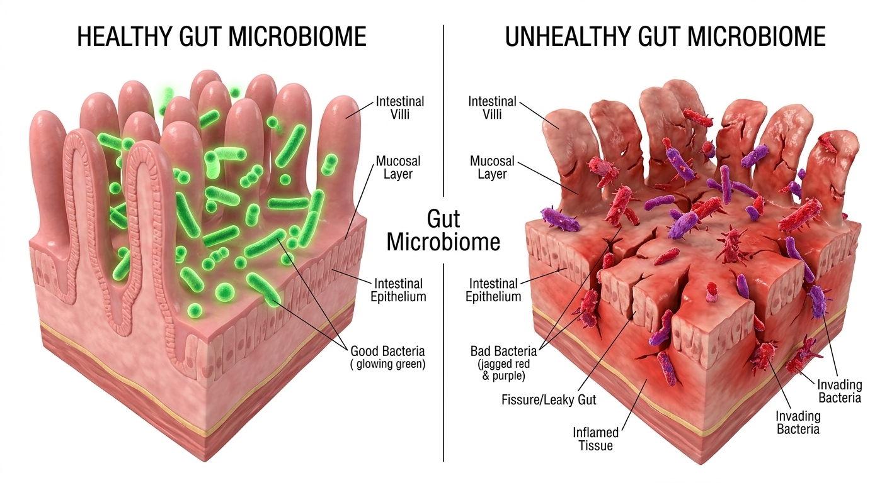

Why am I always bloated? The answer might not be your diet, but your gut bacteria imbalance.
If you are a woman over 40, you’ve probably noticed a frustrating shift. The diet and exercise routines that kept you lean in your 30s suddenly stop working. You wake up asking yourself: "Why am I always bloated?" and wondering how to deal with stubborn lower belly fat women struggle with as they age.
For years, doctors blamed hormonal weight gain in 40s entirely on declining estrogen. While it's true that estrogen dominance weight gain and hormonal changes and digestion are closely linked, recent scientific studies reveal a much deeper root cause: your gut health.
As women transition into menopause, their bodies produce less stomach acid and digestive enzymes. This leads to a severe gut bacteria imbalance. When bad bacteria overpopulate your digestive tract, they trigger chronic inflammation and weight gain.
This is why you might experience bloating after eating everything. The bad bacteria ferment the food in your stomach, creating excess gas. This condition, often linked to leaky gut syndrome symptoms, is a primary driver of menopause belly fat and the dreaded menopause brain fog and fatigue.

Signs of poor gut health include a damaged gut lining that leaks toxins into the bloodstream.
Can bad gut bacteria cause weight gain? Absolutely. A sluggish metabolism isn't just about age; it's about the flora in your intestines. When women search for how to reduce bloating fast or natural ways to debloat belly, they often turn to extreme diets, which only further starve the good bacteria.
If you want to know how to get rid of hormonal belly or how to flush out bad gut bacteria, the solution lies in restoring the microbiome. While foods to heal the gut lining (like bone broth and fermented vegetables) are helpful, they are rarely enough to overpower a severe imbalance.
This is where finding the best natural supplements for digestion comes in. While many debate digestive enzymes vs probiotics, studies show that specific strains of probiotics for women over 50 are crucial. You need targeted probiotics for hormonal balance to effectively increase good gut bacteria and support natural gut health restore.
Researchers have recently identified specific strains of good bacteria that address the link between gut health and weight loss. When properly formulated, these premium blends act as powerful menopause bloating remedies and help fix a sluggish metabolism.
By understanding how to heal gut microbiome, you can finally combat weight gain and fatigue. It's time to stop fighting your body and start supporting your gut.
Restoring healthy gut flora is the key to boosting metabolism naturally for women.
If you're tired of struggling with stubborn belly fat, constant bloating, and fatigue, it’s time to look at your gut microbiome. We have found a premium, science-backed probiotic blend designed specifically for women's changing bodies.
Check Availability & Save Up To 60% Today 🎁 Includes FREE Digital E-Books on Gut Repair with select packages!*Special promo code automatically applied for our readers. 100% Safe Checkout.